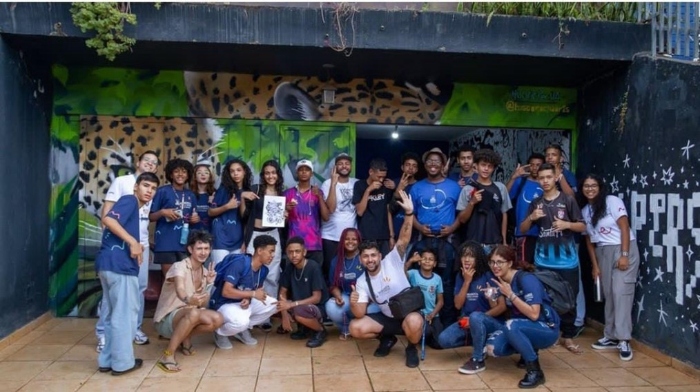

CONVERSA INSPIRADORA COM MATHEUS HENRIQUE BALIEIRO: PROJETOS EDUCATIVOS E INOVAÇÃO NA PRÁTICA PEDAGÓGICA MARISTA
O entrevistado foi o educador Marista Matheus Henrique Balieiro, de 28 anos, que possui 6 meses de experiência como educador. Sua profissão é educador social, embora seja formado em Geografia. Confira a entrevista logo abaixo.
Quais foram os projetos que você realizou com seus educandos?
Desenvolvemos um projeto de fotografia na modalidade 3, que consistiu em ocupar outros espaços da cidade fora do ambiente marista, como a quadra do SESC, brechó social do SESC, e a sua divulgação. Também foi realizado um projeto de fotografia fora da escola.
Quais foram os projetos realizados dentro da escola?
Dentro da escola, em parceria com Aline, desenvolvemos um projeto de fotografia contando a história das pretitudes, cujas imagens serão expostas no dia 24/03/2023, durante a finalização do projeto Pretitudes.
Percebi que alguns de seus educandos estavam envolvidos em um projeto no Minecraft Education?
Gostaria de abordar esse projeto agora. A proposta era que eles criassem várias fases utilizando o Minecraft Education para aplicar na modalidade 1 do Conviver, que abrange a faixa etária mais jovem. Eles também utilizaram inteligência artificial para criar os personagens da história, outra para animar, e uma terceira para gravar as vozes. Atualmente, estão na fase de aprimoramento do jogo.
Data da Publicação: 13 de dezembro de 2023
Por Cristian Tayler de Oliveira (1º ano B)